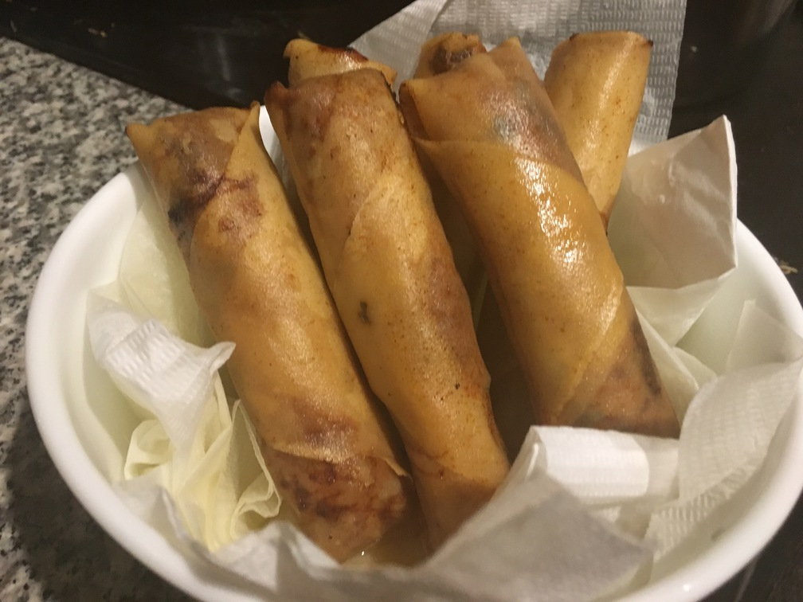

| Other | Meat | Veggie | Fruit |
|---|---|---|---|
| bun | ground chicken | carrot | |
| mien | ground pork | cucumber | |
| nuoc mam pha | shrimp | dried fungus mushrooms | |
| lettuce | |||
| mint | |||
| perilla | |||
| shallot |
| instructions |
|---|
| For cha gio, want a mixture of 65% meats, 20% carrots, 10% mushrooms, 5% mien |
| Soak mien and a few fungus separately in boiling water for a couple minutes, drain, rinse and repeat |
| Mix ground pork (66% lean) and loosely ground shrimp at a 2:3 ratio |
| Mix in minced shallots, mushrooms, salt, and pepper |
| Then add in shredded carrots and minced mien |
| Pan fry egg rolls until internal temperature sufficient, want the oil to be at least halfway to the surface of the roll |
| Eat with bun, cha gio, lettuce, cucumbers, mint, perilla, and nuoc mam pha |